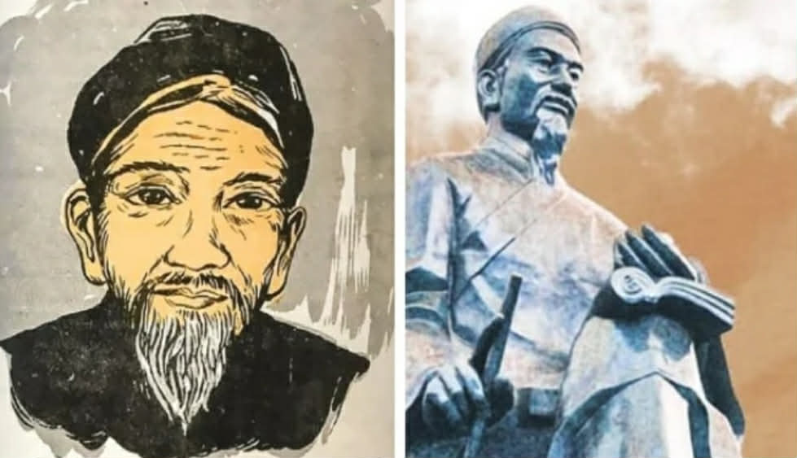

Cuộc đời và sự nghiệp của Trạng Trình Nguyễn Bỉnh Khiêm
Nguyễn Bỉnh Khiêm (1491–1585) là một trong những nhân vật có ảnh hưởng nhất của lịch sử Việt Nam thế kỷ 16. Ông được biết đến với tư cách là một nhà giáo dục vĩ đại, một nhà thơ lớn và một nhà tiên tri nổi tiếng với bộ "Sấm Trạng Trình".
Video tư liệu lịch sử
(khu vực trong đền)
(cổng đền)
Nguyễn Bỉnh Khiêm (1491 – 1585) - Tên huý: Văn Đạt, Tự: Hanh Phủ, Hiệu: Bạch Vân am cư sĩ. Các môn sinh tôn ông là Tuyết Giang phu tử.
Tóm lược cuộc đời và tầm vóc
- Bậc đại thụ văn hóa: Là nhân vật ảnh hưởng nhất lịch sử văn hóa Việt Nam thế kỷ 16, đại diện tiêu biểu cho thời kỳ Lê - Mạc.
- Sự nghiệp khoa bảng: Đỗ Trạng nguyên năm 1535. Dù làm quan nhưng luôn đề cao tư tưởng thân dân, coi trọng gốc dân hơn quyền lực.
- Tước hiệu cao quý: Là văn nhân hiếm hoi được phong tới tước Trình Quốc công (Trạng Trình) ngay khi còn sống dù không nắm binh quyền.
Di sản văn học và tư tưởng
- Kế thừa ngôn ngữ thi ca từ thời Nguyễn Trãi, góp phần hoàn thiện nền thơ văn dân tộc trước thời Nguyễn Du.
- Tác giả của Bạch Vân am thi tập và Bạch Vân quốc ngữ thi tập, khai phá dòng thơ triết lý, thế sự.
Nhà dự báo chiến lược kỳ tài
- Có tầm nhìn địa chính trị đi trước thời đại nhiều thế kỷ.
- Chủ quyền Biển Đông: Nhà nghiên cứu đánh giá ông là người đầu tiên có tầm nhìn chiến lược thấu suốt về biển Đông từ thế kỷ 16.
- Quốc hiệu Việt Nam: Sử dụng hai chữ "Việt Nam" một cách có ý thức nhất trong di sản thơ văn lưu lại.
Tiểu sử Trạng Trình Nguyễn Bỉnh Khiêm
- Tước hiệu Trình Quốc Công: Qua 2 tấm văn bia tại Quỳnh Phụ (Thái Bình), các nhà nghiên cứu xác nhận Nguyễn Bỉnh Khiêm đã được vua Mạc phong tước Trình Quốc công từ trước năm 1568, sớm hơn 17 năm trước khi ông qua đời.
- Gắn bó với quê hương: Phần lớn cuộc đời gần một thế kỷ của ông trải qua tại quê nhà Trung Am (tên cũ là Trình Tuyền), Vĩnh Lại thuộc xứ Đông — vùng đất phát nghiệp của nhà Mạc.
- Đường quan lộ đặc biệt: Ông bước vào chốn quan trường khá muộn khi đã 45 tuổi (đỗ Trạng nguyên năm 1535). Dù nhiều tài liệu cho rằng ông chỉ làm quan 7 năm rồi về dạy học, thực tế từ năm 53 đến 73 tuổi, ông chủ yếu làm quan tại gia với vai trò cố vấn chiến lược cho vua Mạc, chỉ về triều khi bàn việc đại sự hoặc theo xa giá dẹp loạn.
- Nền tảng giáo dục: Nguyễn Bỉnh Khiêm được nuôi dưỡng trong gia đình nội ngoại đều có học vấn uyên thâm. Đặc biệt, dòng họ ngoại đóng vai trò quan trọng trong việc hình thành nhân cách và tài năng thiên bẩm của ông.
- Tầm sư học đạo: Nghe danh Bảng nhãn Lương Đắc Bằng tại Thanh Hóa, ông đã lặn lội vào tận xứ Thanh để theo học. Với trí thông minh và sự chăm chỉ, ông sớm trở thành học trò xuất sắc nhất của thầy Lương.
- Lựa chọn thời thế: Sống trong thời kỳ Lê sơ suy tàn, ông đã bỏ qua tới 9 kỳ đại khoa trong suốt 20 năm vì không muốn đi vào "vết xe cũ". Chỉ đến thời kỳ Mạc Thái Tông (Mạc Đăng Doanh) thịnh trị, ông mới quyết định đi thi và ngay lập tức đỗ đầu.
- Những giây phút cuối đời: Ngày 28 tháng 11 năm 1585, ông tạ thế tại quê nhà ở tuổi 95 — một tuổi thọ hiếm có. Trước khi mất, ông vẫn đau đáu vận nước khi dâng sớ khuyên vua Mạc: "Lấy dân làm gốc, lấy nước làm trọng, trong sửa sang văn trị, ngoài chuyên cần võ công" để giữ gìn cơ nghiệp.
Công lao và Đóng góp cho Dân tộc
1. Bậc Tiên tri và Cố vấn Chính trị lỗi lạc
Nguyễn Bỉnh Khiêm được coi là "kiến trúc sư" đứng sau sự ổn định của các thế lực phong kiến thời bấy giờ. Với tầm nhìn thiên tài, ông đã đưa ra những lời khuyên làm thay đổi cục diện lịch sử:
- Với nhà Mạc: Ông hết lòng phò tá, giúp triều đại này giữ vững cơ nghiệp tại vùng đất Cao Bằng thêm nhiều năm.
- Với nhà Nguyễn: Lời sấm "Hoành Sơn nhất đái, vạn đại dung thân" đã mở đường cho chúa Nguyễn Hoàng vào khai phá phương Nam, hình thành bản đồ Việt Nam ngày nay.
- Với nhà Trịnh: Ông khuyên chúa Trịnh "Nhờ chùa thờ Phật mà ăn oản" (giữ ngôi vua cho nhà Lê), giúp tránh một cuộc nội chiến đẫm máu không cần thiết.
2. Người thầy của những vương triều (Tuyết Giang Phu Tử)
Sau khi cáo quan, ông mở trường dạy học tại quê nhà, lấy hiệu là Tuyết Giang Phu Tử. Ông không chỉ dạy chữ mà còn dạy đạo làm người, đào tạo nên hàng loạt nhân tài cho đất nước như:
- Phùng Khắc Khoan (Trạng Bùng)
- Lương Hữu Khánh
- Nguyễn Dữ (Tác giả Truyền kỳ mạn lục)
3. Đại thi hào dân tộc
Ông để lại kho tàng văn học đồ sộ với hàng ngàn bài thơ chữ Hán và chữ Nôm. Thơ của ông không chỉ có giá trị nghệ thuật mà còn chứa đựng triết lý sâu sắc về nhân tình thế thái, ca ngợi lối sống thanh cao, gần gũi với thiên nhiên qua tập "Bạch Vân am thi tập" và "Bạch Vân quốc ngữ thi".